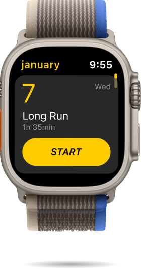
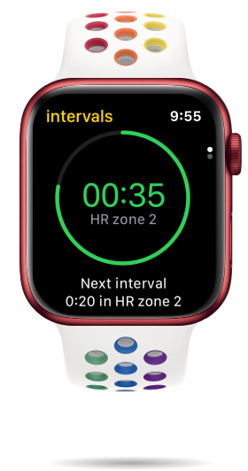
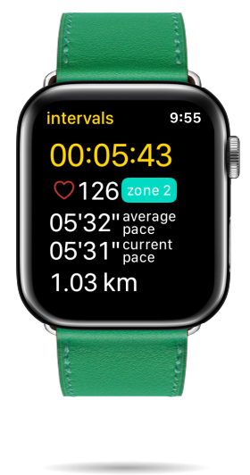
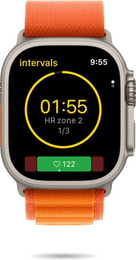
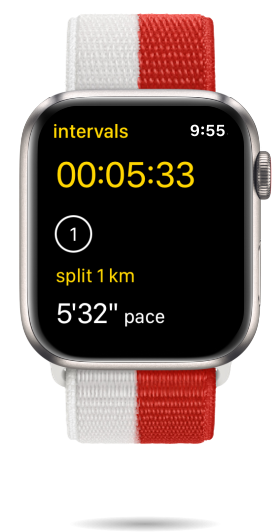

RunPlan
Structured running plans, designed watch-first — a coach on your wrist that tells you what to run today, and why. Privacy-first: no accounts, no ads.





Overview
RunPlan is a structured running coach built for Apple Watch — the plan lives on your wrist and starts the right workout with one tap. I co-founded it and design it end-to-end; my engineering co-founder builds the plan algorithms. It's live on the App Store and growing organically.
Why I built RunPlan — a personal pain
Training for the Amsterdam Marathon felt stressful — the distance alone was intimidating, and the prep added more on top. I wanted a tool to structure my training and take some of that pressure off. But as I looked for one, I kept running into the same frustrations:
- I had to keep the whole plan in my head. Every run started with the same question — what day is it, and what am I supposed to do today? Nike Run Club's "Day 1, Day 2" logic ignored the calendar, so every week: "it's Wednesday, am I on Day 3 or 4?"
- I had to pace the run myself, eyes glued to the watch. Apple Workouts tracks a run but doesn't guide one — so I planned and counted my own intervals, checking the screen constantly to know where I was in the workout.
- Friction before I could even start. Runkeeper hid the plan behind logins and paywalls, and its watch sync kept failing.
- Too much app for a simple need. Runna was genuinely good — but a whole ecosystem and subscription. I wanted a tool, not another platform.
Day after day I was deciding what and how to run, filtering a lot of noise to find what actually worked instead of distracting me. That pulled energy from the training itself and wore down my motivation. So I decided to build the tool — a personal pain, turned into a product.


Talking to runners
While I searched and pulled apart the tools already on the market, I was also talking to other runners — handing friends the MVP and watching them try to build a plan, and grasp why they'd want one. Three things kept coming up:
- People couldn't see why a plan mattered or how to start — so I later made simplifying onboarding a priority.
- Plans feel complex — which set the core principle: hide the science, show one clear answer.
- People love ticking off a finished workout — so I made completion and progress central, not an afterthought.
Constraints we chose — and why they help
Before any feature, I drew a few hard lines. Each one narrows the product on purpose — and each one pays off:
Apple Watch only
No accounts, no login
No social layer
Key design decisions
With those boundaries set, three decisions did the heavy lifting — each answering a real behaviour problem, not a feature request.
1. Kill decision fatigue — anchor the plan to a real calendar
2. Bet on substance — the plan has to be genuinely good
3. Live on the wrist — and on top of Apple, not around it


Designing for the wrist (watchOS)
The watch is where the run starts, so it drove the core interactions. The hardest part of the whole product was the very thing that made me start it: a seamless Apple Watch ↔ iPhone connection, so the plan, the live run and your progress always agree. That invisible plumbing is what makes RunPlan feel effortless — and it's what I couldn't find anywhere else.
One seamless loop: RunPlan owns the plan, the watch runs it, Apple Fitness tracks, and progress syncs straight back.

The hardest design problem: a coach has a lot to say, and the watch has room for almost none. On a 40mm screen, every view has to answer one question at a glance — so I built each state around a single job: the run ahead, the interval you're in, the rest, the finish. Everything else is one tap away, not on screen.
Feedback you feel, not read — the direct fix for the pain that started the whole project. With the stock tracker I had to keep glancing at the watch to pace my intervals; RunPlan speaks through haptics instead: a distinct tap when the workout starts, when an interval changes, and when you pass a milestone. You feel the plan and keep running — eyes on the road, not the wrist.
Getting this right was genuinely hard — Apple Watch UI is, in our experience, pathologically harder than iPhone: the simulator lies, a build takes minutes, and a 4 px misalignment only shows on the real device. So I designed against the watch itself, on real runs — the human eye on the wrist was the only reliable test.
How we ship — two people, AI-native
My co-founder owns the algorithms and heavy logic. I own the product surface — research, UX/UI, the marketing site, App Store, analytics and QA — and I ship design changes straight into the code with AI (Claude Code, Gemini and ChatGPT, from the terminal). When iOS 26 brought Liquid Glass, I redesigned the whole app to it in code.
We release about once a month and re-prioritise by impact, not a fixed roadmap — we simplified onboarding before polishing the activity view, because a smoother first run matters more than a nicer screen deep in the app. No handoff between design and code means two people ship like a bigger team.
Day to day it's a tight loop — idea → build in code → test on a real run → debug → repeat — and what we test matters more than how much. About 100 unit tests on the plan engine earn their keep; ~25 UI tests caught zero real bugs — on a watch, the only reliable test is me running with it. One performance bug hid for months until we found it by bisecting the UI piece by piece. At this size, debugging is part of the design work.
A tight build–test–debug loop on real runs — and back around, about once a month.
Outcome
RunPlan is live on the App Store — 5K, 10K and half-marathon plans, no sign-ups, no ads — growing organically, with no marketing yet. Volumes are early, but the number I watch is store conversion: about 9% of people who see the page install the app, well above the typical rate. Since I designed the store page and the product, that tells me the positioning lands. The product is built; distribution is the honest next step.
What I learned
- A "simple" idea is rarely simple. "A calendar of runs" hid a surprisingly complex plan engine underneath.
- The hardest problems are invisible. Reliable watch–phone sync was more work than any screen — and it's what makes the app feel effortless.
- AI changed our slope. Shipping code with AI alongside design, two of us move well above our size.
- Built isn't adopted. The product was the easier half; getting it to runners is the next thing to crack.
What's next
The roadmap is big: new plan types (soon), richer runner analytics and progress, and an engagement layer — streaks and a monthly-recap "stories" feature — to turn a plan into a habit people return to.